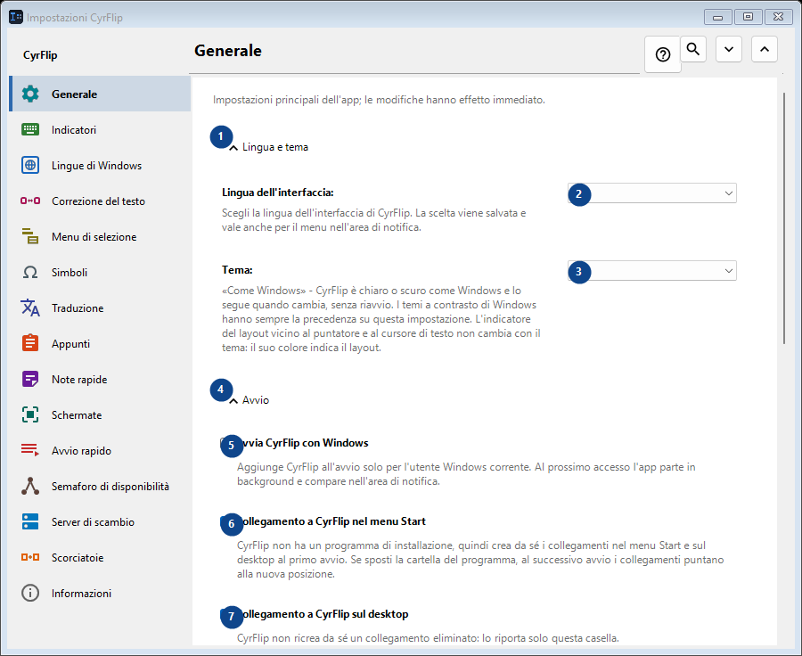
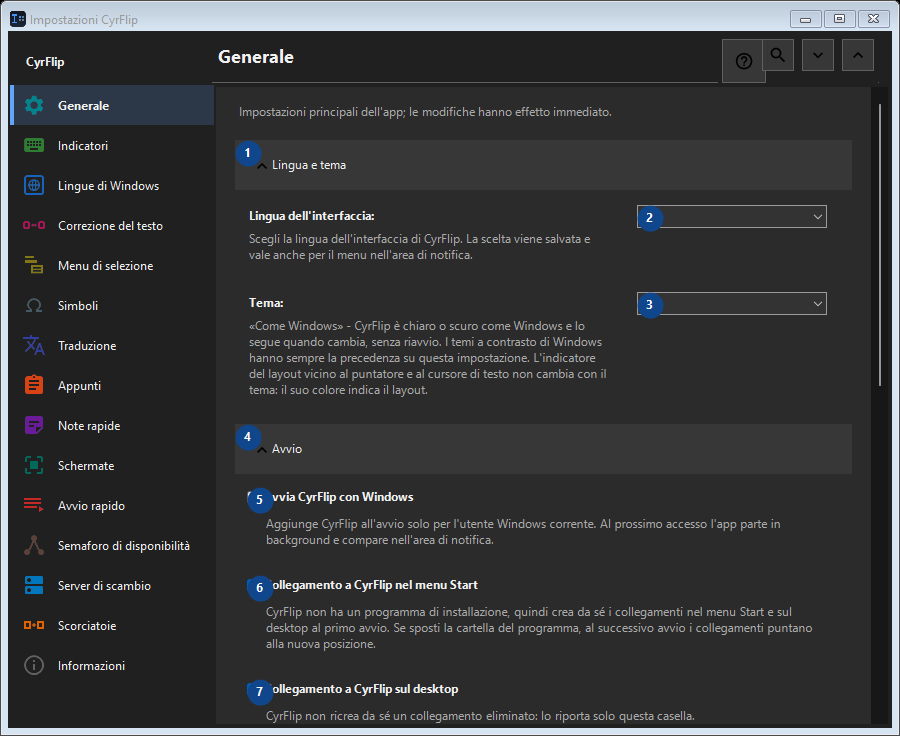

Impostazioni CyrFlip
A cosa serve
Impostazioni principali dell'app; le modifiche hanno effetto immediato.


Ordine delle operazioni
Leggi le spiegazioni numerate, scegli i valori necessari e continua con il comando della finestra.
Elementi
1. Lingua e tema
Usa questo comando per l’azione indicata. Leggi ogni richiesta di conferma prima di accettare.
Le tue scorciatoie2. Lingua dell'interfaccia
Scegli o inserisci il valore indicato dall’etichetta vicina. Controllalo prima di continuare.
Le tue scorciatoie3. Tema
Scegli o inserisci il valore indicato dall’etichetta vicina. Controllalo prima di continuare.
Le tue scorciatoie4. Avvio
Usa questo comando per l’azione indicata. Leggi ogni richiesta di conferma prima di accettare.
Le tue scorciatoie5. Avvia CyrFlip con Windows
Aggiunge CyrFlip all'avvio solo per l'utente Windows corrente. Al prossimo accesso l'app parte in background e compare nell'area di notifica.
Le tue scorciatoie6. Collegamento a CyrFlip nel menu Start
CyrFlip non ha un programma di installazione, quindi crea da sé i collegamenti nel menu Start e sul desktop al primo avvio. Se sposti la cartella del programma, al successivo avvio i collegamenti puntano alla nuova posizione.
Le tue scorciatoie7. Collegamento a CyrFlip sul desktop
CyrFlip non ricrea da sé un collegamento eliminato: lo riporta solo questa casella.
Le tue scorciatoie8. Alimentazione e schermo
Usa questo comando per l’azione indicata. Leggi ogni richiesta di conferma prima di accettare.
Le tue scorciatoie9. Impedisci la sospensione del computer
Finché è attiva, Windows non va in sospensione o ibernazione durante l'inattività — comodo per download, copie o rendering lunghi. Lo stato viene salvato: un interruttore lasciato attivo tiene sveglio il computer anche dopo un riavvio - CyrFlip non sorveglia la batteria al posto tuo.
Le tue scorciatoie10. Mantieni lo schermo acceso (come nei video)
Lo schermo non si spegne né si blocca durante l'inattività, come quando guardi un video. Non annulla il blocco con password (Win+L o un criterio di sicurezza). Lo stato viene salvato: un interruttore lasciato attivo tiene acceso lo schermo anche dopo un riavvio.
Le tue scorciatoie11. Trasferimento impostazioni
Usa questo comando per l’azione indicata. Leggi ogni richiesta di conferma prima di accettare.
Le tue scorciatoie12. Esporta impostazioni...
Usa questo comando per l’azione indicata. Leggi ogni richiesta di conferma prima di accettare.
Le tue scorciatoie13. Importa impostazioni...
Usa questo comando per l’azione indicata. Leggi ogni richiesta di conferma prima di accettare.
Le tue scorciatoie14. Ripristina impostazioni prima dell'importazione...
Non c'è ancora nulla da ripristinare: CyrFlip salva lo stato originale subito prima della prima modifica. Questo elemento non è disponibile. Attiva prima la funzione o seleziona una voce.
Le tue scorciatoie15. Conserva una copia di sicurezza delle impostazioni in Documenti
Quando attivo, CyrFlip conserva una copia progressiva di ogni impostazione in Documents\CyrFlip\Backups - mantiene le tre più recenti. La copia sopravvive alla reinstallazione da Microsoft Store: una nuova installazione la trova e offre di ripristinarla. Il file contiene i tuoi host, i tuoi siti e i tuoi scenari - conservalo con riservatezza.
Le tue scorciatoie16. Apri la cartella delle copie
Le copie sono normali file di impostazioni, denominati per data. Apri la cartella per copiarne una o portarla su un altro computer.
Le tue scorciatoie